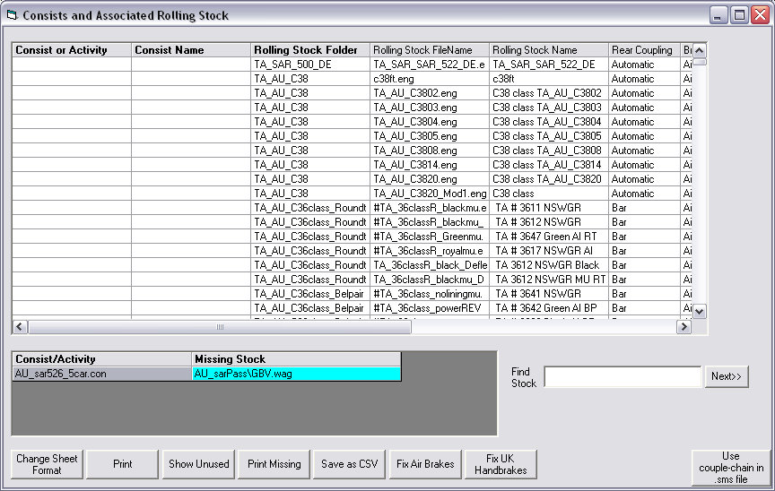
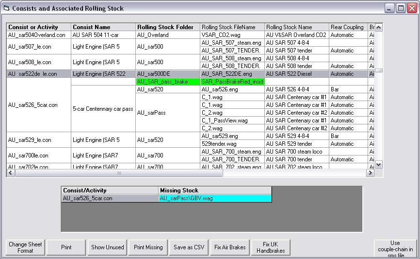
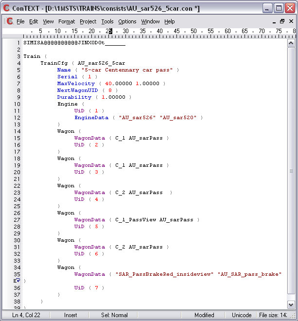

On the Report Screen, a typical error message has the format:
"Missing - Folder_Name\filename.wag (or .eng) From Consist_filename.con".
This means that Route_Riter has been unable to find a filename.wag (or.eng) ANYWHERE on your system and that either the folder or the WAG or both are absent from your MSTS installation.
In the report above, an example is "Missing - AU_sarPass\GBV.wag From AU_sar526_5car.con".
Translating this message: Route_Riter has been unable to find the "GBV" item of rolling stock ANYWHERE on your system and that either the folder or the WAG or both are absent from your MSTS installation.
To quote Bob the Builder "Can we fix it? YES WE CAN!"
Go back to the "Consists and Associated Rolling Stock" screen. Missing Items are shown in their own box with the name of the Consist and the ENG or WAG file name in Cyan, thus:

You now need to find the consist in the upper window: you can either scroll through the list or use the Search box at lower right. Enter the filename in whole or part (even if not at beginning of filename, eg 526 will find 526tender, sar526engine, etc), and press "Enter". To search for next file click "Next" or press "F3". Case of search string doesn't matter.
When you find the missing shape, it will be highlighted in red (unless the indicator bar is covering the item you are looking for - simply move it down and you will see the item in red):
If you click on "Change Sheet Format", it's easier to see the component parts of the consist you're looking at:
Left-click to select, then right-click once on the item highlighted in red - AU_sarPass\GBV.wag in the example above - and after a few seconds a "Replace Rolling Stock Item" screen appears. I immediately click on "Path" to sort the folders and scroll down to the folder I need and select the carriage I want to use instead of the missing "GBV".
- Click on the item of rolling stock you wish to use;
- (Optional) Check the box to change any instances of GBV to the one we've selected;
- Click "Ok".
- A message appears saying "Modified Consist Activated";
- Click "Exit" to close this screen.
Now when you return to the "Consists and Associated Rolling Stock" screen, you will see that the corrected wagon is highlighted in Green.

Note that the corrected ENG/WAG file appears on this screen at the top of the rolling stock list for that consist: don't worry, Route_Riter has correctly placed the new item in the same place in the consist as the one it replaced - in this case at the end of the train. The image below shows the consist inside ConTEXT with the brake van where it should be at the end of the train.
